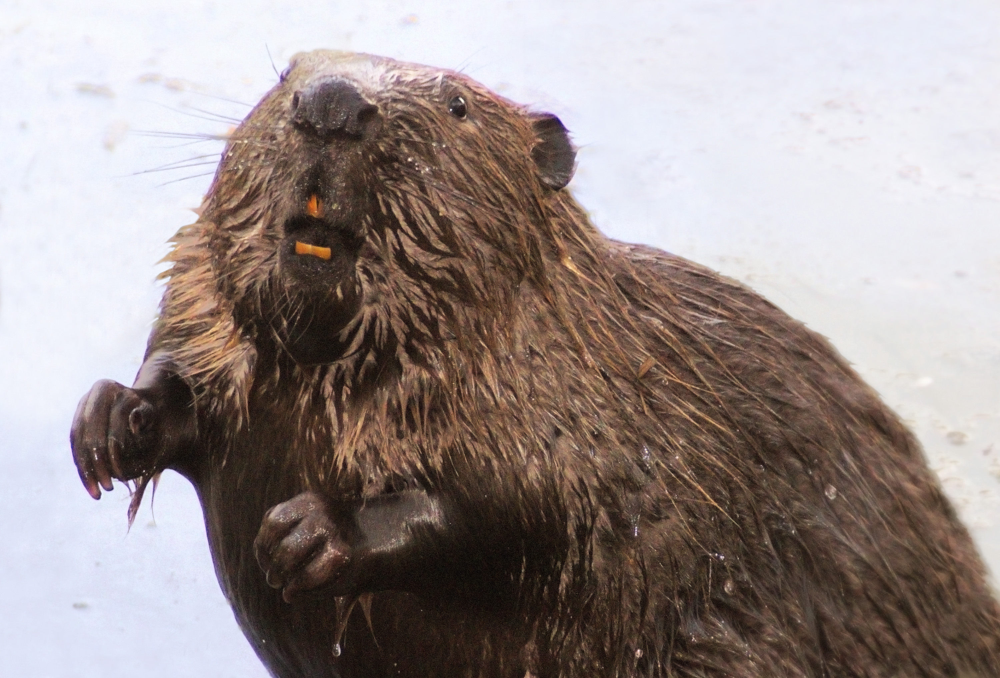
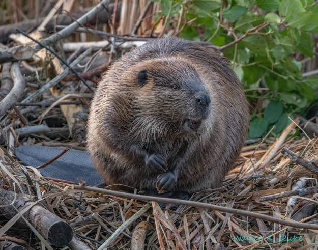
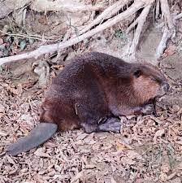

подзаголовок 1
Бобры́ — род млекопитающих из отряда грызунов. Единственный современный представитель семейства бобровых. Делится на два вида — обыкновенный бобр, обитающий в зоне от Атлантического побережья до Прибайкалья и Монголии, и канадский бобр — в Северной Америке.
подзаголовок 2
Слово «бобр» унаследовано из праиндоевропейского языка (ср. нем. Biber; жем. bėbros), образовано неполным удвоением названия коричневого цвета. Реконструируемая основа *bhe-bhru-. Согласно лингвистическим источникам 1961 года, слово бобр должно употребляться в значении животного из отряда грызунов с ценным мехом, а бобёр — в значении меха этого животного: бобровый воротник, одежда на бобровом меху[3]. Однако в разговорном языке слово бобёр повсеместно используется как синоним слова бобр (как лиса и лисица, хорёк и хорь).
подзаголовок 3
В древненовгородском диалекте древнерусского языка для обозначения бобра годовалого возраста и его шкурки использовалась слово др.-рус. ꙗрьць, в частности, оно упоминается в берестяной грамоте № 910, где перечисляется сбор подати: «мьдвьнаго: е҃: соръчьць и: г҃: ѧрци: е: съ кно»[5]. В современном русском языке лексема «ярец» с тем же значением употребляется в старожильческих сибирских говорах, происходящих от северных диалектов раннего формирования (Даль в своём словаре указывает, что лексема употребляется в таком значении на Камчатке[6]), и фиксируется в том числе в документах XVII века, например ясачных книгах. Особи и шкурки бобра, не достигшие годовалого возраста, на тех же говорах соответственно обозначаются словом «ко́шлок» или «кошла́к» (последнее также употребляется в значении «детёныш калана»)